AI/LLM engineer building agentic workflows, RAG and evaluation infrastructure, and the backend they run on. Currently ERP Developer at Hirdaramani Bangladesh, previously Agentic AI Engineer at BLOOMTECH and ML Engineer for a US news-intelligence platform. Software Engineering graduate of Universiti Teknologi Malaysia (July 2026, First Class), shipping for clients in the US, Luxembourg, Spain, Bangladesh and Malaysia.
Full-time and contract roles for teams in Bangladesh, the US and Luxembourg, start to ship.
Not repos — shipped products. Sites you can open right now and apps you can install on your phone.
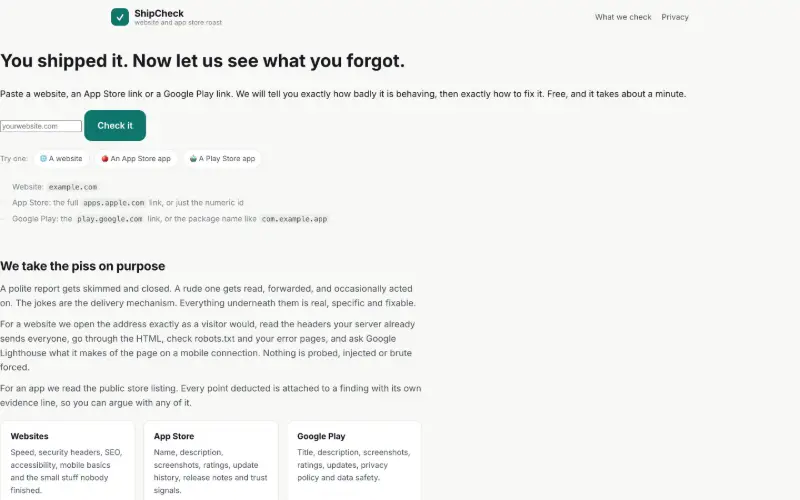
Live · Free Tool · No LoginPaste a website, an App Store link or a Google Play package and get a scored health check with the exact fix for every finding. Websites are scored across seven categories, with Lighthouse behind the performance numbers. I calibrated it against youhadonejob.dev, and on 26 real sites every score landed within 10 points.
Open the tool ↗Lead management platform for a Malaysian financing consultancy that matches customers with banks. I built the Flutter customer app, the React portal for staff, agents and bankers, and the Firebase backend, with role access enforced on the server. It runs in English, Malay, Tamil and Chinese.
Short-term personal loan system for a Malaysian client: a Flutter Android app for applicants, a React + Vite staff panel and a Firebase backend. Offers, eligibility rules, required documents and in-app text are all managed from the panel, so changing them does not need an app release.
Internal system for Hirdaramani Group that takes lab test requests from submission through approval, lab work, reporting and payment, with printable reports in five languages. ASP.NET Core with Clean Architecture and CQRS, an Angular front end and SQL Server, covered by automated tests.
A take-home build: a keyboard-driven triage tool in Retool over Postgres, a SQL audit of the dataset behind it, and a recovery workflow that retries failed jobs with backoff. Covered by automated tests and CI.
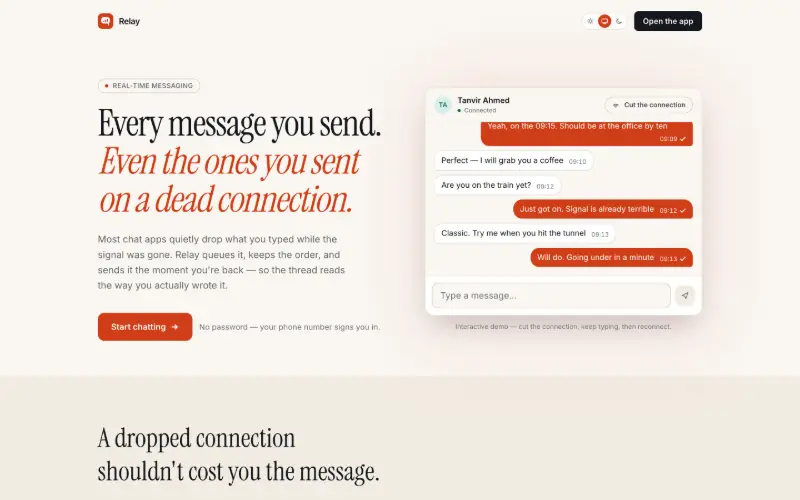
Live · Real-Time · Offline-FirstReal-time direct and group chat on Next.js with an offline outbox that survives a reload. Tabs signed in as the same user stay in sync, and since the free-tier backend sleeps, the landing page wakes it up while you read. 91 unit tests, clean lint and type check.
Open the app ↗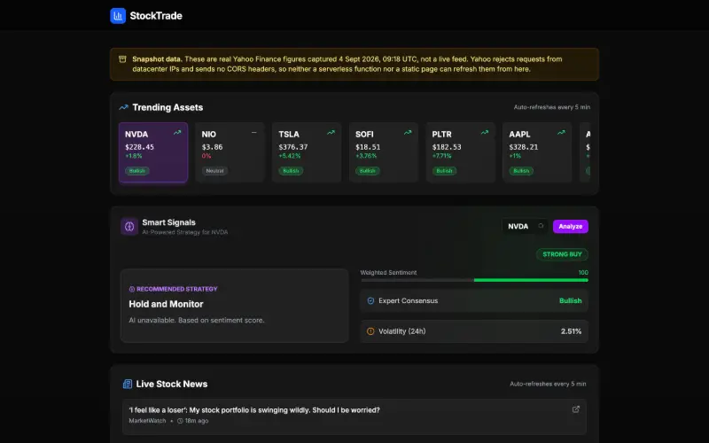
Live · Local LLM · No LoginStock social platform that scores community posts for insight quality and rolls reputation-weighted sentiment into a per-ticker Smart Signal, using a local LLM over Ollama instead of a paid API. When Yahoo Finance blocks live prices, it falls back to a timestamped snapshot and says so in a banner.
Visit site ↗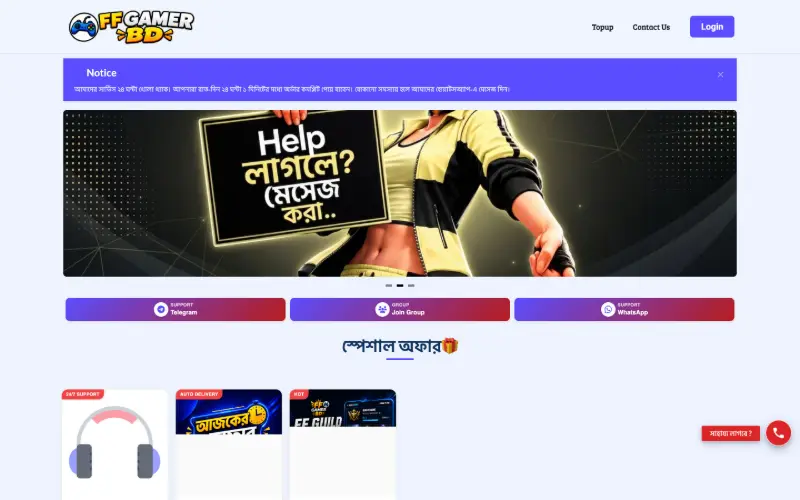
Live · Client Work · Bangladesh 🇧🇩Live Free Fire top-up store in Bangladesh on Laravel and Filament. I did the backend integration work: connected a reseller API for automatic order fulfilment and built the payment gateway integration, where every payment callback is checked with the provider before an order is marked paid.
Visit site ↗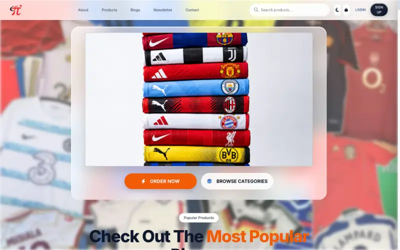
Live · Client Work · Bangladesh 🇧🇩Bangladeshi streetwear and tech-accessories storefront on Node.js and Express, with bKash, Nagad, Rocket and cash-on-delivery checkout. I was brought in during a production outage, traced it to the hosting setup and a broken dependency build, and got the store serving again.
Visit site ↗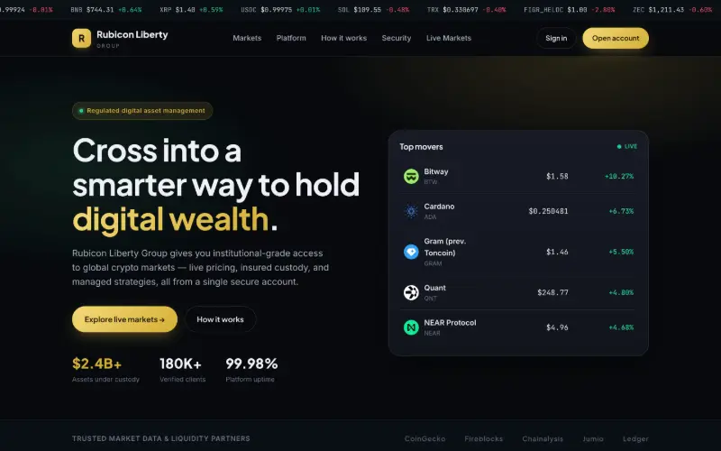
Live · Product Build · Crypto MarketsDigital asset markets platform, built as a self-directed product and not a live financial service. Live pricing for 50 assets from CoinGecko, refreshed every 60 seconds, with market stats, search, gainer and loser filters and a seven-day sparkline per asset. Demo status and risk warnings are stated in the footer.
Visit site ↗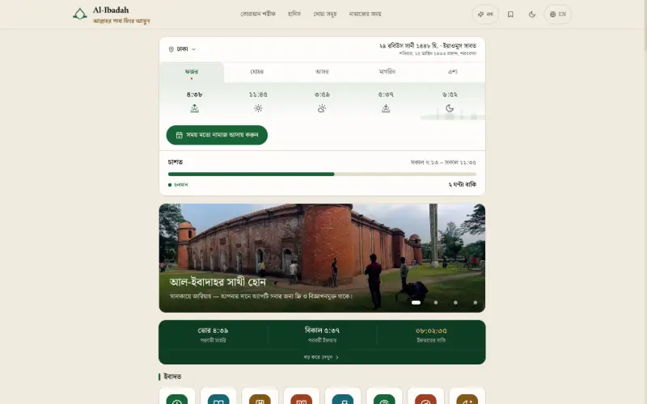
Live · Bangla-First · Bangladesh 🇧🇩Bangla-first Islamic reference site: the full Quran with five Bangla translations and ten reciters, 36,432 hadith, daily duas, and prayer times and qibla for all 64 districts. The /ask assistant runs entirely in the browser and refuses rather than invents. Donations go through PipraPay with bKash, Nagad and Rocket, and a Flutter companion app is in closed testing.
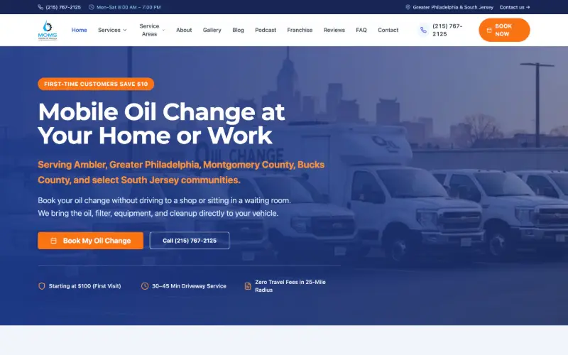
Live · Client Work · USA 🇺🇸Live production site for a US mobile oil change and fleet maintenance business in Philadelphia. I redesigned the header and navigation, rebuilt three product pages, and led an SEO overhaul — dynamic sitemap, 301 redirects for legacy city URLs, and consolidation onto /locations/[city] dynamic routes.
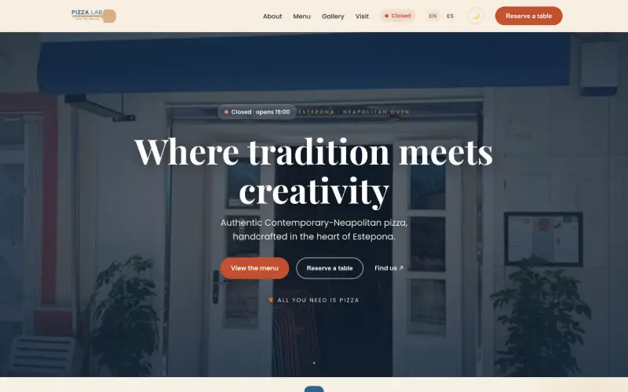
Live · Client Work · Spain 🇪🇸Bilingual English and Spanish site for a pizzeria in Estepona, Spain, with a no-code admin where the owner edits the menu, prices, hours and photos and the site updates instantly. I also keep the printed English and Spanish menus in step with the site, most recently adding a new dessert and a scannable Instagram QR code.
Visit site ↗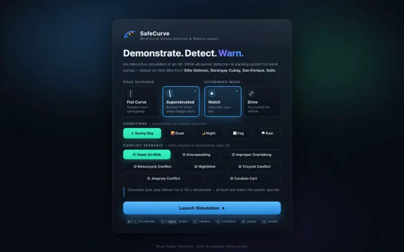
Live · Road Safety · SimulationInteractive Three.js driving simulation backing a road-safety study — drivers experience a blind-curve scenario, react to escalating LED and buzzer warning levels, and rate the system, generating real user-acceptance data. Also packaged with Capacitor into a fully offline 4 MB Android APK.
Visit site ↗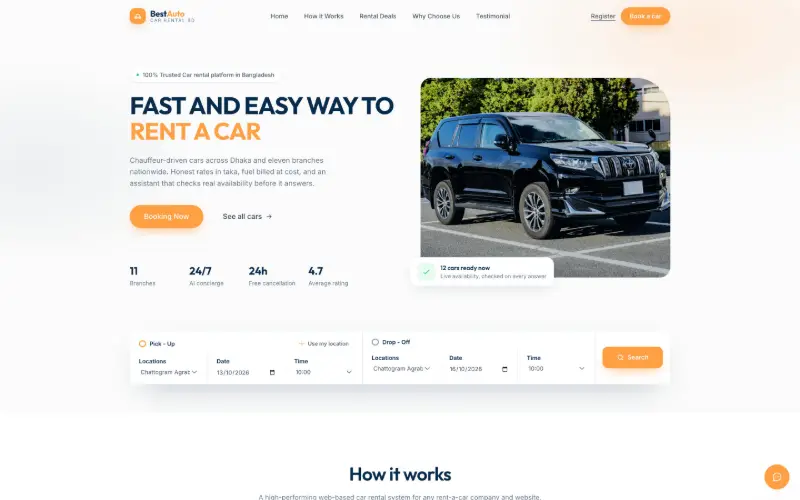
Live · Full Platform · 80 TestsFull car rental platform — customer booking flow, functional admin dashboard, a provider-agnostic AI concierge with output validation, and an event-driven automation engine. 80 automated tests across 20 suites, with CSP, HSTS and Permissions-Policy headers in production.
Visit site ↗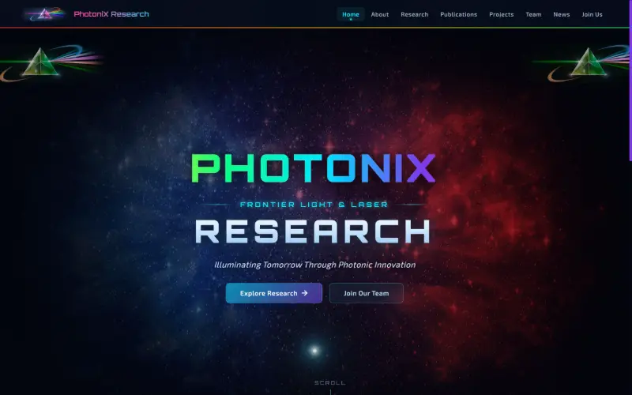
Live · Client Work · ResearchProduction website for a photonics and laser research group — research areas, publications, team profiles, news and recruitment, with a motion-driven front end.
Visit site ↗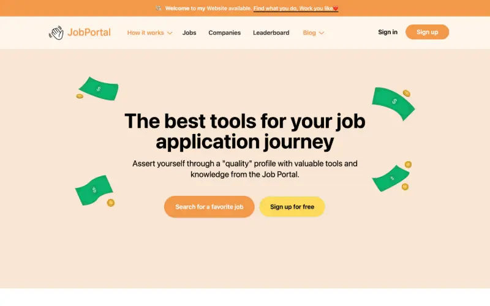
Live · Full-Stack · ProductJob application platform with company profiles, job listings, a candidate leaderboard and a blog — built to make the application journey measurable rather than a black box.
Visit site ↗ Installable App · Android + iOSFood-rescue app for Malaysia connecting donors, recipients and volunteer riders — Gemini vision grades dish quality and halal status, an on-device TFLite classifier caches its own model, with Checkout.com / TNG eWallet payments and four languages.
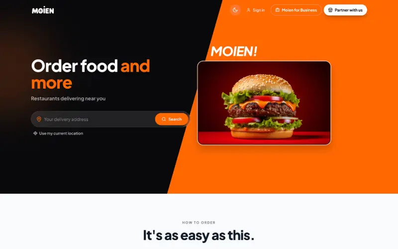
Live on Stores · Luxembourg 🇱🇺Food delivery platform for Luxembourg serving customers, restaurants and drivers. I built the Angular web front-end and a cross-platform React Native app, with real-time order tracking, driver dispatch and delivery workflow automation over REST APIs and WebSocket event streams.
Flutter local-business discovery app with explorer, business and admin roles: deals with checkout codes, loyalty rewards, reviews, shop messaging and Gemini-backed recommendations. Version 2 moves it off Firebase onto a self-hosted Dart API I built, with live updates over WebSocket. Version 1.0.2 is in TestFlight ahead of App Store review.
School management system in daily use across 40 schools in Sylhet, Bangladesh — a React admin dashboard plus a React Native app for parents and teachers, with Cloud Functions fanning out role-targeted push notifications by school, role and class.
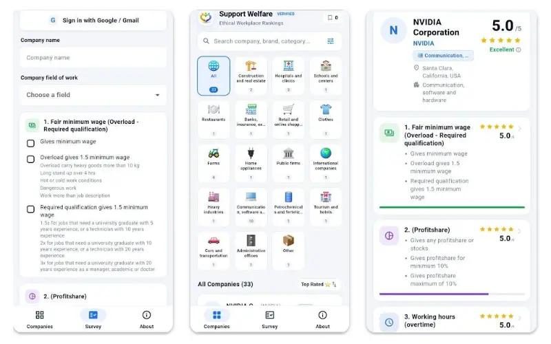
Live on Google Play · Joint ProjectA joint project, live on Google Play, that ranks employers on how they treat their workers. A Flutter app for the public and a React + TypeScript reviewer panel share one Firebase backend. Companies are scored on five welfare criteria, and every survey answer is checked against public evidence before it publishes.
Fifteen systems an AI engineer actually gets asked to build — retrieval, evaluation, guardrails, routing, agents. Every one is hosted and interactive: open a card, type your own input, and the real code runs and shows you its actual output. 494 tests, no API key anywhere. applied-llm-systems.vercel.app · source
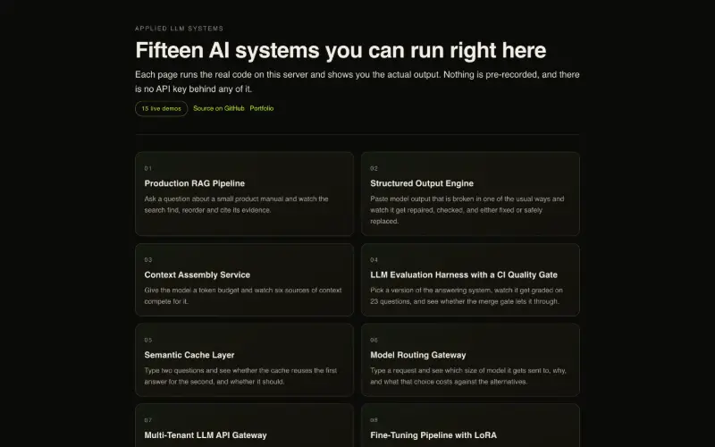
Live · 15 Interactive Demos · 494 Tests · Zero Paid APIsFifteen production-shaped LLM systems in one codebase on a dependency-free Python core. Every demo and test runs offline with no API key, and a CI gate fails the build if any runtime file imports a third-party package. Point one environment variable at Ollama or any OpenAI-compatible endpoint and the same code runs against a real model.
Open the live demos ↗Ingestion, chunking, hybrid BM25 + vector search fused with reciprocal rank fusion, reranking, and answers where every citation is validated against a retrieved chunk before it ships. Reranking lifted recall@1 from 0.67 to 0.93 and MRR to 0.967.
System 02 · Live · Run it nowA JSON Schema validator, extractor and repair chain written from scratch, with validation errors fed back into the retry. With every response deliberately corrupted, success went from 50% at one attempt to 88% at three, half of it repaired locally with no second model call.
System 03 · Live · Run it nowToken budgeting across memory, documents, tools and history, with per-section minimums, compression strategies and a reserved completion budget. Naive concatenation overran an 800-token window by 426 tokens; the assembler overflowed none and kept every high-priority source.
System 04 · Live · Run it nowGolden dataset, deterministic scorers, a rubric and pairwise LLM judge, bootstrap confidence intervals, and a CI gate that blocks a merge on regression. Pairwise judging showed 78.3% position bias, so those verdicts are recorded as ties rather than trusted.
System 05 · Live · Run it nowAn embedding cache with TTL, LRU eviction and namespace isolation. The paraphrase and near-miss sets turned out not to be separable by any threshold, so a salience guard compares numbers, entities and negations: it removed all five false hits without losing a real one.
System 06 · Live · Run it nowComplexity scoring across explainable features, three tiers, per-tenant overrides, budget guards and a circuit-broken fallback chain. 55.7% cheaper than always-large across 44 requests, and it served all 44 through a total outage of the top tier.
System 07 · Live · Run it nowSalted-hash API keys, token-bucket rate limits, reserve-then-reconcile token budgets and namespaced storage, served over plain http.server. A cross-tenant read returns a byte-identical 404 to a fictional id, so the API is not an existence oracle.
System 08 · Live · Run it nowSynthetic data generation, dedupe and stratified splits, then LoRA implemented from scratch: frozen base weights, a trained low-rank pair, alpha/r scaling and a merge. 1,048 trained parameters against 1,542 for a full fine-tune, at the same accuracy.
System 09 · Live · Run it nowWorking, episodic and semantic memory with summarisation on overflow, contradiction handling that supersedes rather than deletes, and decay-based eviction. A fact stated at turn 2 is still recalled at turn 32 inside a 300-token budget where the baseline fails.
System 10 · Live · Run it nowWeighted injection detection, reversible PII redaction with Luhn-checked card numbers and Bangladeshi and Malaysian phone formats, output filters and a policy engine that records which rule fired. 140 PII decisions with no false positives or negatives, at 0.1ms overhead.
System 11 · Live · Run it nowServer-sent events with heartbeats, bounded-queue backpressure under real TCP flow control, cancellation, and Last-Event-ID resume. A connection killed mid-stream resumes to 277 contiguous ids with zero duplicates and no regeneration.
System 12 · Live · Run it nowContent-hash versions, environment labels, hash-based sticky traffic splitting, outcome tracking and a two-proportion z-test promotion gate written in pure Python. It refused to promote at n=40 despite a significant p-value, then promoted at n=600.
System 13 · Live · Run it nowNested tracing with token, latency and cost attribution, privacy-safe capture, EWMA anomaly detection and alert cooldown. Seven alert events became three pages, no span carried raw prompt text, and 36% of calls turned out to be 98% of the bill.
System 14 · Live · Run it nowSchemas derived from type hints, a discoverable registry, argument coercion, per-tool circuit breakers and sandboxed execution with a safe AST evaluator. Twelve sandbox escape attempts rejected, including dunder walks and huge exponents, with real arithmetic still working.
System 15 · Live · Run it nowA bounded loop that rewrites the query, critiques its own retrieval, escalates through a fallback ladder and abstains below a confidence floor. 16 of 19 answerable questions right against 13 single-shot, and it refuses 5 of 8 unanswerable ones instead of inventing an answer.
Thirteen builds I'd defend in a code review — agents, LLM evaluation infrastructure, MLOps, and mobile. The rest of the archive lives on GitHub.
An LLM planner proposes modeling strategies under a time budget, Optuna tunes XGBoost/LightGBM/sklearn, ensembles get built, and SHAP explains the winner — shipped with model cards, a FastAPI inference service, an automated test suite, and CI/CD pushing to Docker Hub.
LLM Evals · InfraCI/CD for prompts — a semver-versioned registry where each improvement cycle runs failure analysis, generates candidates, A/B-evaluates them with a blinded LLM judge, and auto-promotes winners per YAML rules. Multi-dimensional scoring across OpenAI and Anthropic providers.
Agents · DevToolsPip-installable CLI agent that plans edits via OpenAI/Anthropic, applies them through a diff manager, and executes inside E2B Firecracker microVMs — with guardrails that scan for leaked credentials (AWS, GitHub, Slack) before any edit is applied, covered by an automated test suite.
Multi-Agent · AWSClimate-resilience platform for smallholder farmers — a fleet of 10+ specialized AWS Bedrock agents (water optimization, climate migration, grant matching, disease diagnostics) on AWS Lambda, plus an on-chain water-rights trading contract in Solidity.
Agents · VoiceTalk to your browser — Deepgram streams speech to text, GPT-4o parses it into structured intents, and Stagehand executes them on real pages through Browserbase. Say "find me flights to Tokyo" and watch the browser do it.
LLM Infra · RoutingCost / latency / quality-aware LLM router on Next.js — NotDiamond picks the best model per request with a heuristic fallback chain across 5 providers, backed by continuous provider health checks.
Industrial CV · MLOpsSmart-factory visual inspection dashboard — Django REST + React TypeScript with live defect-detection simulation, a model registry tracking versions and metrics, and defect heatmaps across the production line.
Multimodal AIChat with any YouTube video — transcripts and OpenCV-extracted frames embedded for combined semantic + visual search, every answer cited with clickable timestamps. JWT auth, per-user rate limiting, an automated test suite, and Docker Compose with healthchecks.
RAG · DocumentsFastAPI RAG chatbot — upload PDFs, ask questions, get cited answers. FAISS handles the vector search, the HuggingFace Inference API handles the generation.
Healthcare · AccessibilityHealthcare accessibility app in Flutter — communication tools for patients who can't speak or hear easily, a Gemini-powered medical chat, and telemedicine flows, all on a Firebase backend.
Urban AI · Kuala LumpurAI urban-planning app for Kuala Lumpur — graph neural network and reinforcement-learning traffic models behind a Flutter/Firebase frontend, with a Gemini RAG chatbot answering city-planning questions over local data.
HR Tech · DHL-InspiredIntelligent leave-logistics platform in Flutter + Firebase — separate HR and employee dashboards, bulk onboarding via Excel import, and a Gemini-powered chatbot that answers leave-policy questions so HR doesn't have to.
Semiconductors · AnalyticsSemiconductor analytics platform — FastAPI backend simulating real-time chip telemetry with a Streamlit dashboard on top, and an ML model predicting chip failures before they happen.
Eleven more shipped under NDA or private distribution — described by problem and outcome, since the code isn't mine to publish.
ML-powered EdTech platform built as a full system-design showcase — nginx load-balancing two Django APIs, Postgres streaming read-replica with a custom DB router, Redis leaderboards, Celery queues, and a DVC-tracked MLOps loop with OpenCV proctoring, k6 load tests, and Kubernetes manifests with autoscaling.
Civic-data pipeline pulling air quality (OpenAQ/WAQI), GTFS transit, and government notices into one schema — union-find dedupe across sources, weighted severity/proximity/recency ranking, and plain-language LLM summaries cached in Redis. Covered by an automated test suite in CI.
WhatsApp-style construction project management on proper clean architecture (Riverpod, feature/domain layers) — project chat with voice notes, daily progress reports rendered to PDF server-side, and Google Cloud Translation across English, Arabic, and Urdu with full RTL support.
Bilingual (English/বাংলা) mental-wellness platform for Bangladeshi youth — a context-aware engine scores micro-interventions against mood, time of day, and screen time, alongside buddy circles and crisis-support flows. Multi-stage Docker deploy to Cloud Run.
Rice supply-chain platform for Bangladesh — five marketplace roles over a normalised Prisma schema with JWT-authenticated Socket.IO messaging, and an sklearn/XGBoost ensemble trained on district-level BORO/AMAN/AUS yield data feeding a full profit simulator.
Restaurant management system on ASP.NET Core (.NET 10) + React 19 — POS with modifier-aware cart logic, kitchen display, inventory, and reservations across 12 pages. Every KPI (revenue, food/labor cost, channel mix) computed server-side from SQL Server, nothing hardcoded.
Academic research assistant that runs fully local — FAISS RAG over uploaded PDFs with Llama 3 via Ollama (Groq fallback chains), three-stage PDF extraction down to Tesseract OCR, a hand-rolled citation engine in four formats, plus AI flashcards and mind maps.
Autonomous racing controller for a Unity sim — a 5-task rate-monotonic schedule (5–25 ms periods) with deadline-miss instrumentation, custom OpenCV token detection with curve-aware lane geometry, and a YOLOv8 pipeline trained on an auto-labeled synthetic dataset.
Hospital-grade health monitor in Flutter + Laravel — Apple Health / Health Connect sync, vitals with 7-day trends, USDA + barcode food logging, RxNorm medication reminders, and branded PDF health reports. A separate doctor app gets live patient vitals with server-side threshold alerts.
Production-ready school ERP on Laravel 13 + Filament 5 — the full chain works end-to-end: admission (with lottery) → attendance → invoicing → marks → tabulated results → report-card PDFs, plus payslips, ID cards, and a CMS-driven public website. Pest-tested, permission-driven roles throughout.
Prothom Alo-class Bangladesh news platform designed read-heavy and Bangla-first — Django 5 + DRF with Celery, Elasticsearch search, and Redis caching behind nginx, fronted by a Next.js 15 App Router UI. Full architecture rationale documented, Docker Compose throughout.
Tools I reach for when something needs to exist by Friday.
Education, certifications, and the program that started it all.
Bachelor of Software Engineering — Johor Bahru. Graduated July 2026, First Class.
GPU programming with ROCm/HIP. Scored 100% on all five course quizzes and the final exam, first attempt. Valid to Aug 2028.
Amazon SageMaker, Large Language Models, and Prompt Engineering certifications.
Professional Certificate covering full-stack development, cloud native practices, and containerization.
Azure OpenAI Service, Natural Language Processing, and Document Intelligence.
Selected for a competitive 6-month US-based engineering residency — shipped ML and full-stack projects end to end.